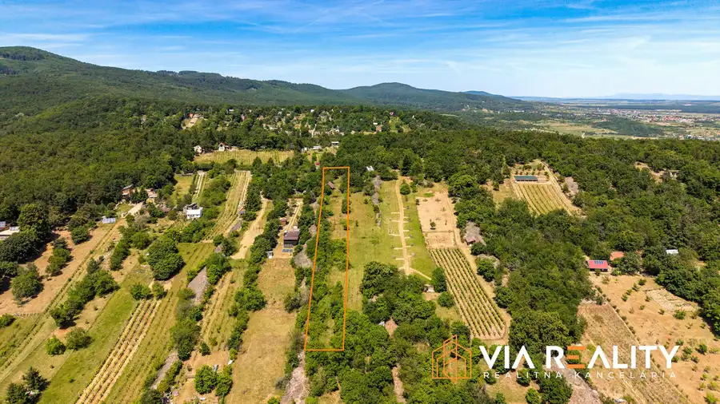
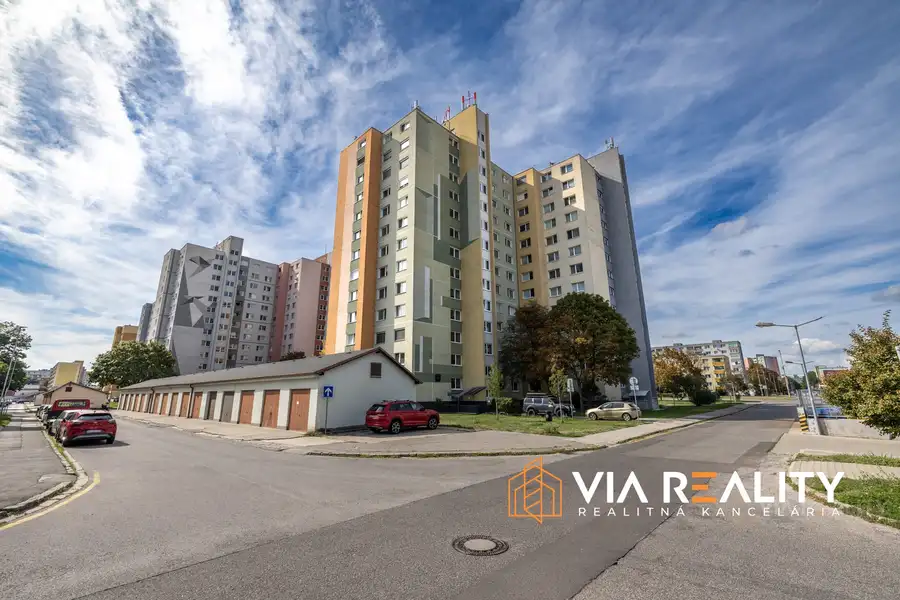
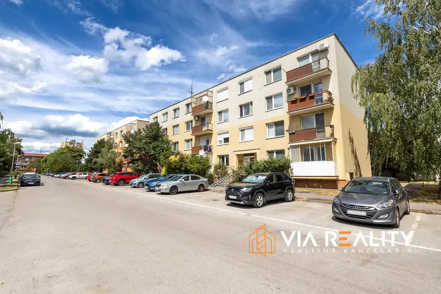

3-izbový byt, balkón, prenájom, Ružová dolina, Bratislava - Ružinov
Ružinov, Bratislava
- Dispozícia3-izbový
- Plocha69 m²
- Poschodie2.
- StavKompletná rekonštrukcia
- VlastníctvoOsobné
O nehnuteľnosti
Realitná kancelária ViaReality Vám ponúka na prenájom 3-izbový byt po kompletnej rekonštrukcii vo výbornej a žiadanej lokalite na ulici Ružová dolina v Bratislave, mestská časť Ružinov.Byt sa nachádza na 4. poschodí v 11 poschodovom bytovom dome s výťahom. Celková rozloha bytu predstavuje 69 m2 vrátane balkónu o rozlohe cca 4 m2. Bytový dom je po kompletnej rekonštrukcii, zateplenie, nový výťah, rekonštrukcia spoločných priestorov. Byt je vhodný na bývanie pre dve osoby alebo rodinu s dieťaťom, domáce zvieratko po dohode možné. Byt je voľný od 1.10.2026.NEHNUTEĽNOSŤDispozícia bytu:- vstupná chodba- kúpeľňa- detská izba- kuchyňa s komorou- toaleta- obývačka s balkónom- spálňaZariadenie bytu:- vybavená kuchynská linka so spotrebičmi- indukčná varná doska- elektrická rúra- umývačka riadu- digestor- chladnička s mrazničkou- skrine, skrinky a komody- práčka - gauč- manželská posteľ- detská posteľLOKALITAOkolie bytového domu poskytuje kompletnú občiansku vybavenosť:- obchody, potraviny, Billa, Lidl, Tesco, Trhovisko Miletičova, Edison Park, OC Central, OC Nivy- reštaurácie, kaviarne- škola a škôlka - pošta, banky, drogéria - fitness, workout ihrisko, kúpalisko Delfín- zastávka MHD s výbornou dostupnosťou do mesta- výborné napojenie na diaľnicuCENACena za prenájom bytu je 850,- €/mesiac plus energie vo výške 170,- €/mesiac pre dve osoby, v prípade troch osôb je doplatok za energie vo výške 210,- €/mesiac.Zodpovedný maklér: Martin Chromý, kontakt 0948 102 855, email: chromy@via-reality.skText a fotodokumentácia sú majetkom a autorským dielom spoločnosti ViaReality s.r.o. © Copyright
Parametre
| Cena vrátane energií | Nie |
|---|---|
| Druh | 3 izbový byt |
| Dátum zverejnenia | 15. 9. 2026 |
| Energie | 170 |
| Plocha balkónu v m2 | 4 m² |
| Podlažie | 2 |
| Počet balkónov | 1 |
| Počet izieb / miestností | 3 |
| Stav nehnuteľnosti | Kompletná rekonštrukcia |
| Telekomunikácie | Optická sieť |
| Typ | Prenájom |
| Umiestnenie | Ďalšie nadzemné podlažie |
| Vlastníctvo | Osobné |
| Vybavenie | Balkón, Výťah |
| Zariadenie | Zariadené kompletne |
| Úžitková plocha | 69 m² |
Kde to je


Mohlo by Vás zaujímať

PozemokNové10 129 000 €Rekreačný pozemok so zrubom (chatou) a vinohradom, 4122 m² – Modra Modra 4122 m² Realitná kancelária ViaReality ponúka na predaj výnimočný rekreačný pozemok so zrubom v pokojnom prostredí Malých Karpát na okraji mesta Modra.…
BytNové10 Cena dohodou3-izbovy byt, prenajom, loggia, Ipeľská, Bratislava Podunajské Biskupice, Bratislava 3-izbový73 m² Realitná kancelária ViaReality Vám ponúka na prenájom priestranný 3-izbový byt s loggiou na Ipeľskej ulici v Bratislave.Byt sa nachádza na 8.…
BytRezervované10 194 900 €3-izbový byt, balkón, predaj, Bystrická, Pezinok Pezinok 3-izbový75 m²3. podlažie REZERVOVANÉ Realitná kancelária ViaReality ponúka na predaj priestranný 3-izbový byt s balkónom vo vyhľadávanej lokalite na Bystrickej ulici v…